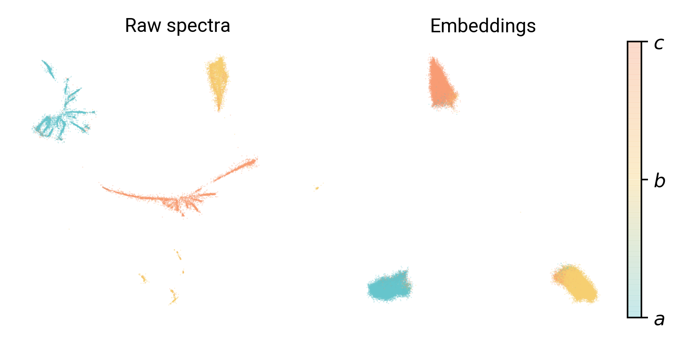

<!DOCTYPE html>
<html lang="en">
  <head>
    <meta charset="utf-8" />
    <meta name="viewport" content="width=device-width, initial-scale=1.0, maximum-scale=1.0, user-scalable=no" />

    <title>PySpecTools</title>
    <link rel="stylesheet" href="./css/reveal.css" />
    <link rel="stylesheet" href="./_assets/css/dark-chique.css" id="theme" />
    <link rel="stylesheet" href="./css/highlight/atom-one-dark-reasonable.css" />
    <link rel="stylesheet" href="./css/print/paper.css" type="text/css" media="print" />

  </head>
  <body>
    <div class="reveal">
      <div class="slides"><section  data-markdown><script type="text/template">

<!-- .slide: data-background-video="figures/RingSpace.mp4" data-background-video-loop="true" -->

# `PySpecTools`

## Pythonic and Deep Learning Workflows for Spectroscopy

### _Kelvin Lee_, Alexander MacLeod, Michael C. McCarthy

<div class="footer">
    
</div>
</script></section><section ><section data-markdown><script type="text/template">
<!-- .slide: data-background="https://cdn.eso.org/images/screen/alma-jfs-2010-10.jpg" -->

# Radio Astronomy

- Observations at radio wavelengths ($\lambda$~submm‒metre)
- Transparent to absorption by interstellar dust
- Powerful inteferometry; high bandwidth, spatial, and spectral resolution

<footer>
    <p>Credit: ESO/ALMA/NRAO</p>
</footer>
</script></section><section data-markdown><script type="text/template">
<div class="column">
    <p>Black Hole Imaging</p>
    
    <figcaption>Credit: EHT/NSF/ALMA/SMA/IRAM/JCMT/LMT/SMT</figcaption>
</div>

<div class="column">
    <p>Circumstellar Shells</p>
    
    <figcaption>DOI: <a href="https://www.aanda.org/articles/aa/abs/2018/02/aa31619-17/aa31619-17.html">10.1051/0004-6361/201731619 <a> </figcaption>
</div>

<footer>

<p style="font-size: 1rem">
Astrophysical objects imaged with exquisite detail!
</p>

</footer>
</script></section><section data-markdown><script type="text/template">
# Molecular Astrophysics

<div id="left">

- Molecules reveal physical and chemical properties of space.
    - Gas temperature, density, and velocity
- Microscopic understanding of macroscopic processes;
    - Stellar evolution, planet formation, atmospheres, origins of life
- Insight derived from _known_ molecular identity: assign molecules to observed features
    - Match frequencies with literature data

</div>

<div id="right">

<figure>
    
    <figcaption> <a href="https://ui.adsabs.harvard.edu/abs/2013yCat..35590047B/abstract" <em style="font-size: tiny"> Sgr B2(N) observations with IRAM 30m; Belloche+ 2013</em> </a></figcaption>
</figure>

</div>
</script></section><section data-markdown><script type="text/template">
# Zoom and Enhance

<div id="left">

- Spectroscopic analysis extremely manual and labor intensive
- Hundreds to thousands of spectral features (molecular and interference)
- Difficult to automate, reproduce, and catalog
- Analysis rate incommensurate with data acqusition

<p class="highlight">
    Need to improve automation
</p>


</div>

<div id="right">


</div>
</script></section></section><section ><section data-markdown><script type="text/template">
# Enter PySpecTools

<div id="left">


</div>

<div id="right">

Open-source, Pythonic workflow for assigning broadband spectra

<div class="fragment">

1. Familiar abstraction for spectrocopists, chemists, and astronomers

</div>

<div class="fragment">

2. Encourage reproducible and collaborative spectroscopic analysis

</div>

<div class="fragment">

3. Improve information extraction with deep learning models

</div>

</div>
</script></section><section data-markdown><script type="text/template">
# Typical Workflow

1. Acquire broadband spectra; laboratory and astronomical observations
2. Preprocessing; baseline detection and signal filtering
3. Peak detection
4. Molecule assignments
5. Additional analysis
6. Write-up/Publication
</script></section><section data-markdown><script type="text/template">
# Core Components

<div id="left">

Implementation uses three core abstractions:

1. `AssignmentSession`
    - Metadata, frequency/intensity/automation control
2. `Transition`
    - Representation of spectral features
3. `LineList`
    - Collections of `Transition` objects

</div>

<pre><code class="language-python" style="max-width: 40%">from pyspectools.spectra import assignment

# Load in spectrum and set metadata
session = assignment.AssignmentSession(...)

# Perform preprocessing and peak detection
session.find_peaks(...)

# Load in an external list of frequencies
molecule = assignment.LineList.from_catalog(...)

# Make assignments
session.process_linelist(molecule)

# Generate report
session.finalize_assignments()
</code></pre>
</script></section><section data-markdown><script type="text/template">
# `AssignmentSession`


</script></section></section><section  data-markdown><script type="text/template">
# Separation of variables

There are two distinct steps to assigning spectra:

1. Finding the most likely sequences of lines;

2. How differentiable are the sequences from random frequencies?

<br>

<strong> Probabilistic models to the rescue! </strong>
</script></section><section  data-markdown><script type="text/template">
# The Data

1.6 million asymmetric top spectra with quartic distortion

Parameters uniformly sampled from 1000‒40000 MHz ($A,B,C$).

Additional 600,000 spectra with only $a,b,c$-type fundamental transitions.

</script></section><section ><section data-markdown><script type="text/template">
# An Approximate Hamiltonian

<div id="left">

Use a recurrent encoder-decoder model to evaluate sequences without evaluating a Hamiltonian

For a set of $n$ frequencies $\nu$, we want to evaluate:

$$ \nu_n \vert \nu_{n - 1}, \nu_{n - 2}, \ldots, \nu_{0} $$

In other words, what is the next frequency if I have $n$ frequencies?

Real molecular sequences should follow some parametrized model, while noise should not!

</div>

<div id="right">


</div>
</script></section><section data-markdown><script type="text/template">
# Encoder

<div id="left">

The encoder model learns to compress information about a sequence of frequencies—like parameters of a Hamiltonian ($z$)

$$ z \vert \nu_n, \nu_{n-1},\ldots $$

we refer to $z$ as an "encoding"/"embedding" vector.

LSTM model learns to produce useful embeddings by training a classifier to predict $a,b,c$-type spectra as softmax likelihoods:

$$ \mathrm{softmax(x)} = \frac{\exp(x)}{\sum \exp(x)} $$

</div>

<div id="right">


</div>
</script></section><section data-markdown><script type="text/template">
# A good embedding

<div id="left">

Representation of spectra should be readily differentiable

UMAP visualization compares 2D projections of raw spectra and encodings

Raw spectra are 60,000 sets of fundamental transitions

Embeddings are representations of 100,000 asymmetric top spectra

Classification accuracy >90% for all three types for 1.6 M spectra

</div>

<div id="left">



</div>
</script></section><section data-markdown><script type="text/template">
# A good decoder

<div id="left">

Decoder model uses embedding as initial state, and predicts a frequency given a frequency.

Analogy is predicting transitions, given a Hamiltonian model and parameters.

Mean squared error for 1.6 M spectra is ~0.03%; few MHz at ~13 GHz.

Reproduction accuracy is not essential—that's what the discriminator is for!

</div>

<div id="right">


</div>
</script></section><section data-markdown><script type="text/template">
# Discriminator

<div id="left">

Discriminator estimates likelihood of sequence to be noise or "real" molecule

Haven't measured actual accuracy yet, but training/validation error is promising

</div>

<div id="right">


</div>
</script></section></section><section  data-markdown><script type="text/template">
# Finding Sequences

Working with Kyle on a model similar to computer vision/object detection to find sequences.

Also investigating deep reinforcement learning to train neural network to find most likely sequences.
</script></section><section  data-markdown><script type="text/template">
<div class="grid sidebar">
    <h1> Thank you! </h1>
</div>

<div class="l-multiple">
    <div class="img-frame">
        
        <span>@cmmmsubmm</span>
    </div>
    <div class="img-frame">
        
        <span>laserkelvin.github.io</span>
    </div>
    <div class="img-frame">
      
      <span>@laserkelvin</span>
    </div>
</div>

<footer>

Copyright © 2020 Kelvin Lee

</footer></script></section></div>
    </div>

    <script src="./lib/js/head.min.js"></script>
    <script src="./js/reveal.js"></script>

    <script>
      function extend() {
        var target = {};
        for (var i = 0; i < arguments.length; i++) {
          var source = arguments[i];
          for (var key in source) {
            if (source.hasOwnProperty(key)) {
              target[key] = source[key];
            }
          }
        }
        return target;
      }
      // Optional libraries used to extend on reveal.js
      var deps = [
        { src: './lib/js/classList.js', condition: function() { return !document.body.classList; } },
        { src: './plugin/markdown/marked.js', condition: function() { return !!document.querySelector('[data-markdown]'); } },
        { src: './plugin/markdown/markdown.js', condition: function() { return !!document.querySelector('[data-markdown]'); } },
        { src: './plugin/highlight/highlight.js', async: true, callback: function() { hljs.initHighlightingOnLoad(); } },
        { src: './plugin/zoom-js/zoom.js', async: true },
        { src: './plugin/notes/notes.js', async: true },
        { src: './plugin/math/math.js', async: true },
      ];
      // default options to init reveal.js
      var defaultOptions = {
        controls: true,
        progress: true,
        history: true,
        center: true,
        transition: 'default', // none/fade/slide/convex/concave/zoom
        dependencies: deps
      };
      // options from URL query string
      var queryOptions = Reveal.getQueryHash() || {};
      var options = extend(defaultOptions, {"transition":"fade","transition-speed":"fast","width":"100%","height":"100%","center":false,"margin":0,"minScale":1,"maxScale":1,"symbolperslideprogress":{"position":"left","align":"vertical","symbolColor":"","symbolActiveColor":""},"menu":{"side":"left","width":"normal"},"tableofcontents":{"title":"","position":2,"titleTag":"h1","titleTagSelector":"h1, h2, h3","ignoreFirstSlide":true}}, queryOptions);
    </script>

    <script src="./_assets/plugins/highlight.min.js"></script>

    <script>
      Reveal.initialize(options);
    </script>
  </body>
</html>
